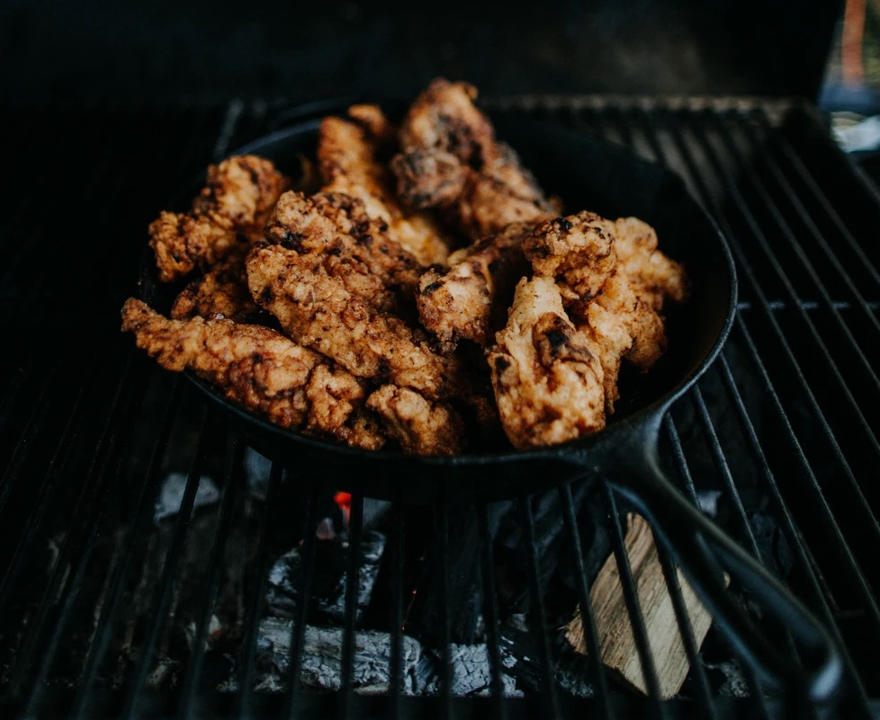

Moroccan Chicken With Pearl Couscous

I found this recipe while looking for something to cook for my partner Steph. It was really well received.
Ingredients
- 1 Packet Chicken Strips
- Juice of 2 Limes
- 3tbsp Olive Oil
- 3 Cloves Garlic
- 1 1/2tsp Ground Cumin
- 2tbsp Canola Oil
- 1 Large Leek, Washed and Thinly Sliced
- 1tbsp Harissa Paste
- 1tsp Ground Tumeric
- 1/2tsp Ground Cinnamon
- 1 1/4 Cups Pearl Couscous
- 1 1/2 Cups Chicken Stock
Method
- Marinade the chicken in a mixture of the lime juice, olive oil, galic and cumin for 30 minutes at room temperature.
- Heat the canola oil in a large dutch oven with lid on medium-high, when hot add the chicken and cook until well browned.
- Set chicken aside, reduce heat to medium and fry leek until translucent, approximately 4 mins. Add harissa paste, turmeric, and cinnamon, cook until lightly toasted (approximately 2 minutes). Season with salt.
- Add couscous and coat in the leek oil. Add stock and boil. Turn heat low and add chicken with any juices. Cover and simmer for 15 minutes or until couscous is Al Dente and Chicken is cooked through.
- Remove from heat and serve.